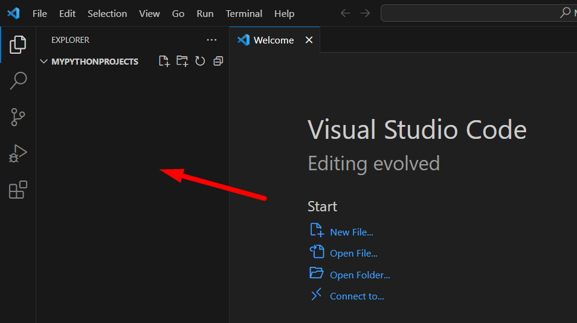
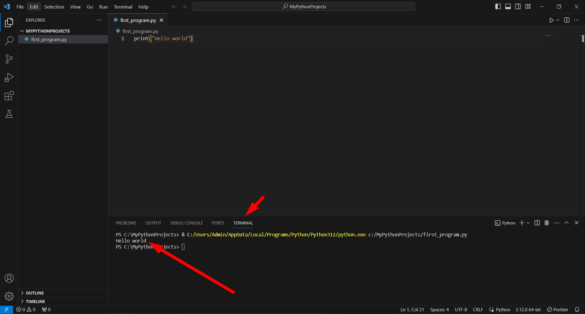

<!-- index.html --> 
<script src="https://rawcdn.githack.com/oscarmorrison/md-page/232e97938de9f4d79f4110f6cfd637e186b63317/md-page.js"></script><noscript>

<style>
@font-face { font-family: CMUSerif; src: url('../data/fnt/cmunrm-msofix.ttf'); }
@font-face { font-family: CMUSerif; font-weight: bold; src: url('../data/fnt/cmunbx-msofix.ttf'); }
body {
	font-family: "Times New Roman", Times, serif;
	width: 850px;
	margin-left: auto;
	margin-right: auto;
	font-size: 20;
	margin-bottom: 300px;
}
h1, h2 {
	font-family: "CMUSerif", serif;
}
img {
	
	width: 850px;
	object-fit: contain;
}
</style>
<head>
	<title>Среда разработки VS Code</title>
	<link rel="icon" type="image/x-icon" href="../data/img/favicon.ico">
</head>
<p style="text-align: right; font-style: italic;">©shaperones</p>

# Среда разработки VS Code


- - -

Команды для интерпретатора можно писать в обычном текстовом редакторе (например, в "Блокноте"). Но чаще для этого пользуются специальной программой, которая называется **средой разработки** (англ. IDE, Integrated Development Environment).

Среда разработки — тоже текстовый редактор, но с дополнительными возможностями. Например, она умеет сама находить на компьютере программу-интерпретатор и запускать программу одной кнопкой. Среда разработки, кроме того, форматирует написанный вами код, чтобы его удобно было читать, а иногда даже подсказывает, где вы допустили ошибку.

На текущий момент очень популярной и удобной IDE является VS Code. Рекомендуем использовать её для решения задач в курсе и вообще в жизни.

В VS Code есть много расширений, которые позволяют настроить среду разработки под свои нужды. Есть расширения для работы с разными языками, сборки проектов, автоматического форматирования кода и многого другого. Это надёжная IDE, которую легко использовать.

## Шаг 1. Скачиваем установщик VS Code

1. Открываем окно браузера и переходим по [ссылке](https://code.visualstudio.com/)
2. Кликаем по синий кнопке **Download for Windows** (или кликаем по кнопке справа для выбора дополнительных параметров)


 
## Шаг 2. Устанавливаем VS Code

1. Запускаем установщик программы
2. Следуем указаниям установщика, нажимая кнопку **Далее (Next)** и потом – **Установить (Install)**
3. Через несколько секунд на нашем компьютере будет установлена IDE VS Code

## Шаг 3. Запускаем VS Code 

При открытии VS Code мы увидим экран приветствия:


Закроем это окно в верхнем левом углу:


Теперь нам нужно выбрать папку для наших проектов (**File** -> **Open Folder...**):


Для этого создаем папку **MyPythonProjects** в директории **Локальный диск (C:)**:


 
Далее кликаем по этой папке левой кнопкой мыши и жмем кнопку **Выбор папки** в правом нижнем углу:


Далее у нас откроется папка для наших проектов, и выскочит такое окно:


Нажимаем на квадратик напротив первой стрелки и синюю кнопку напротив второй стрелки.

У нас должно остаться следующее окно:


 
## Шаг 4. Создаем первый проект на Python

Наведем мышь на указанную область:



Далее кликаем на указанную иконку **New File**:


Печатаем сюда название нашей первой программы **first_program.py** и нажимаем клавишу **Enter**:


Далее в правом нижнем углу у нас выскочит окно рекомендации установить расширение для Python:


Кликаем по кнопке **Install**:


У нас автоматически начнётся установка расширения для Python:


Если же у вас не появилось окно с рекомендацией установить расширения для Python, то это можно сделать вручную во вкладке **Extensions**, введя в поиск **python**:


После успешной установки кликаем на указанную вкладку **Explorer**:


Далее выбираем файл нашей программы:


Лишние вкладки можно закрыть:


Далее нам надо проверить, что все работает. 

Напишем простой код для проверки: `print("Hello world")`.


Чтобы запустить программу, нажимаем на треугольник в правом верхнем углу. Также запуск программы возможно осуществить через **Ctrl + F5**.


Если мы сделали все правильно, у нас появится окно терминала внизу экрана с выведенным текстом "Hello world":


 
## Шаг 5. Некоторые рекомендации по работе с VS Code

Некоторые ошибки в программе будут прописаны в разделе **PROBLEMS** (в следующем случае мы специально удалили закрывающую скобку, что является синтаксической ошибкой в Python).

 

Такое возможно благодаря плагину Pylance, который был автоматически установлен вместе с расширением Python.


В VS Code есть ещё очень много интересного. Можете поискать сами какие-нибудь классные расширения или удобные настройки.

P.S. Python и VS Code иногда не любят файлы и папки, у которых названия на кириллице. Все файлы и папки стоит называть по-английски.

Проекты❌ => projects✅ 

Программа.py❌=> program.py ✅